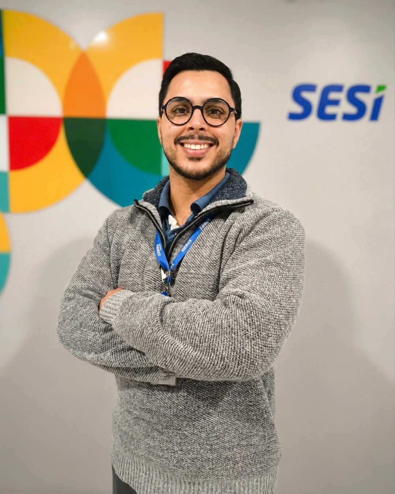
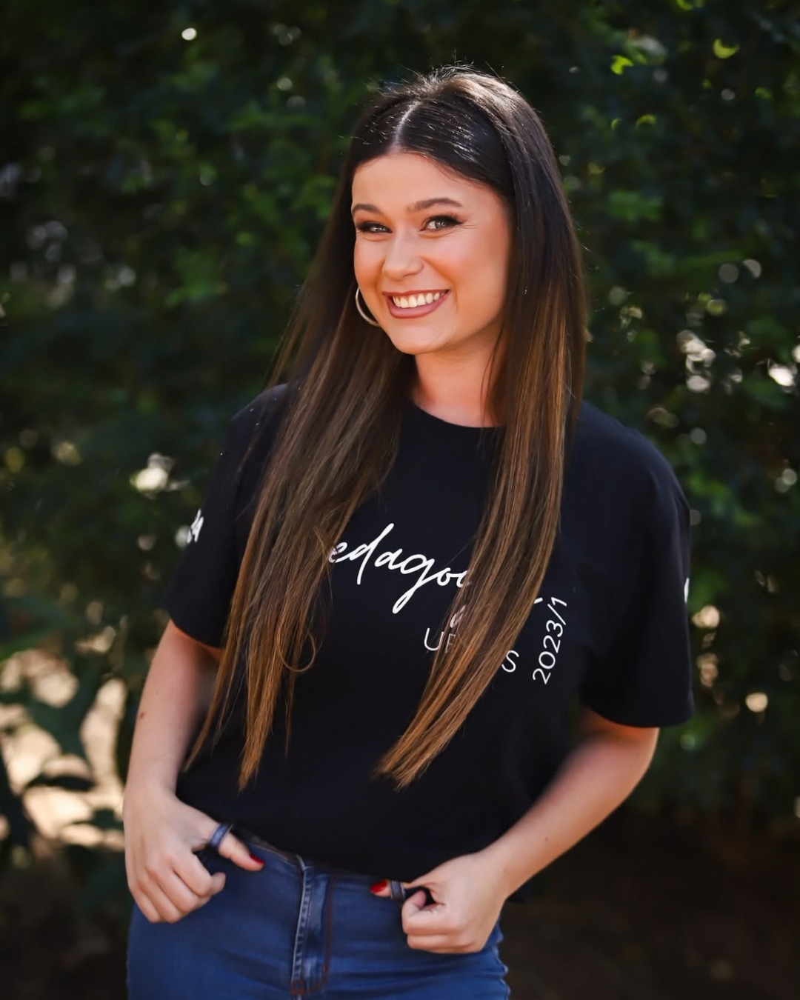
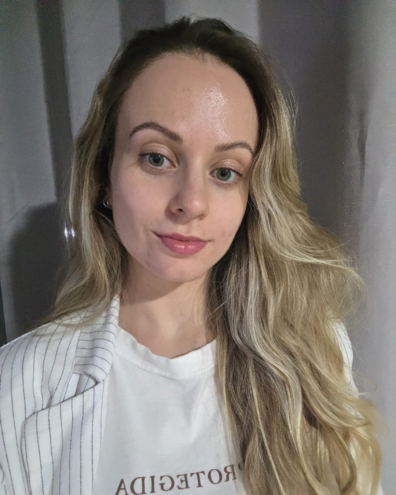

O que é o Manual IArandu?
Entenda o que é o MIA e como você poderá utilizá-lo como material de apoio para o uso da IA na sua pesquisa acadêmica.
O que é o Manual IArandu?
O Manual IArandu (MIA) é uma plataforma WEB voltada a ajudar os alunos de graduação e pós-graduação a utilizarem as ferramentas de Inteligência Artificial como forma de potencializar os seus trabalhos acadêmicos, respeitando os limites éticos do uso da ferramenta como forma de pesquisa e de potencializar a produção científica.
A plataforma foi desenvolvida como atividade de conclusão da disciplina "Inteligência Artificial na Educação: Usos Possíveis e Necessários Limites Éticos", do Programa de Pós-graduação em Educação (PPGEDU) da Universidade Federal do Rio Grande do Sul (UFRGS), na linha de pesquisa: Estudos Culturais em Educação.
A disciplina teve como docente responsável a professora Dra. Cristianne Maria Farmer Rocha (PPGEDU/UFRGS) e teve como objetivo instigar os conhecimentos e habilidades relacionados às ferramentas de IA Generativa, orientando os alunos no processo de desenvolvimento de uma visão crítica da ferramenta, assim como no desenvolvimento e esclarecimento de boas práticas e limites éticos da IA.
O MIA conta com seções que abordam os seguintes conteúdos:
- Esclarecimento sobre o conceito de IA, como ela funciona e demais informações consideradas importantes para os seus usuários e pesquisadores da então tecnologia;
- Boas práticas considerando a escolha da ferramenta, o uso da ferramenta e a utilização do resultado apresentado pela IA;
- Ferramenta de indicação de plataformas de IA categorizadas de acordo com as suas funções e um breve resumo sobre as funcionalidades de cada uma delas;
- Indicações bibliográficas tanto para os usuários como também para os pesquisadores da ferramenta.
Dessa forma, esperamos que a ferramenta seja de grande ajuda para graduandos e pós-graduandos e venha a contribuir de forma positiva em inúmeras pesquisas científicas.
Conheça a equipe desenvolvedora do MIA

Iago Soares é aluno especial das disciplinas de 'Inteligência Artificial na Educação: Usos Possíveis e Necessários Limites Éticos' e 'Fascismo e Educação', ambas do PPGEDU da Universidade Federal do Rio Grande do Sul (UFRGS). Atualmente, é pós-graduado em Tecnologias Educacionais Aplicadas à Educação e Liderança e Gestão de Equipes, ambas pelo Centro Universitário Leonardo da Vinci (UNIASSELVI), tecnólogo em Análise e Desenvolvimento de Sistemas pela Universidade Estácio de Sá (ESTACIO) e graduado em Licenciatura em História pela Universidade Estadual de Alagoas (UNEAL). Atua como professor coordenador do curso técnico de Desenvolvimento de Sistemas realizado de forma concomitante com o Ensino Médio Integral ofertado pela SEDUC-RS e Intrutor Tecnológico na EJA ofertada pelo SESI-RS.

Júlia Schames é pedagoga formada pela Universidade Federal do Rio Grande do Sul (UFRGS), pós-graduada em Psicologia da Educação e mestranda na linha de pesquisa Arte, Linguagem e Currículo. Atua como professora na Educação Infantil, com experiência nas redes pública municipal e privada de ensino.
Matheus Ávila é Bacharel em Design pela Universidade Luterana do Brasil (ULBRA), Especialista em Processos de Inovação pela Universidade Feevale e Mestrando em Design pela Universidade Federal do Rio Grande do Sul (UFRGS) na linha de pesquisa Design e Educação. É Coordenador Nacional e Professor dos cursos EAD de Design Digital, Marketing, Mídias Sociais Digitais e Jornalismo da ULBRA. Integra experiências acadêmicas e profissionais nas áreas de design, inovação e educação à distância. Seus interesses de pesquisa envolvem ensino do design na EAD, branding, marketing digital, metodologias de criação e processos de inovação.
Carlos Armando Díaz Fernández é licenciado em Música pela Universidade Federal do Rio Grande do Sul (UFRGS) e pós-graduado em Piano Popular. Sua atuação em educação musical e performance abrange os repertórios erudito e popular, com ênfase em teoria e percepção musical, técnica vocal, violão, piano e regência coral. Atua como Educador Social na Rede Marista de Porto Alegre, onde desenvolve planejamento pedagógico e andragógico para públicos diversos. Atua, ainda, como produtor cultural, com experiência na organização e produção de eventos culturais. Possui domínio de ambientes virtuais de ensino e aprendizagem (AVEA), de softwares de notação musical e edição de áudio (MuseScore, Reaper e Cubase) e uso didático de dispositivos móveis. Seus interesses de pesquisa contemplam gêneros musicais latino-americanos, com foco na guarânia e no mariachi.
Gabriela Moraes é Licenciada em Ciências Sociais pela Universidade Federal do Rio Grande do Sul (UFRGS) e mestranda em Ciência Política pelo PPG em Ciência Política da mesma universidade, na linha de Cultura Política. Minha trajetória articula pesquisa, educação e atuação social, com interesse especial pelas relações entre juventudes, educação, cultura digital e participação social. Atualmente, atuo como Educadora Social, desenvolvendo propostas educativas que valorizam o protagonismo, a criatividade e a construção coletiva do conhecimento. Como pesquisadora e educadora, busco aproximar a produção acadêmica das práticas cotidianas, compreendendo a educação como espaço de formação crítica, diálogo e transformação social.

Lígia Teresinha Pilger é licenciada em Pedagogia pela Universidade do Vale do Rio dos Sinos (Unisinos), especialista em Neuropsicopedagogia pela Faculdade de Educação São Luís e em Psicopedagogia pela Faculdade Iguaçu. Atua como professora de anos iniciais na rede pública municipal de São Leopoldo (RS), com 6 anos de experiência na área da educação.